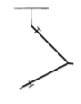

lance008 gen 2018, 20:21
\(\phi = \pi/2 - arcsin(1/3)\)?teodella998 gen 2018, 19:09
Trovare l'angolo di apertura di un compasso affinchè il suo fulcro (per intenderci la parte dove si incontrano le aste) sia il più elevato possibile quando questo è appeso come in figura
- Allegati
-

- 1.PNG (2.38 KiB) Visto 3904 volte